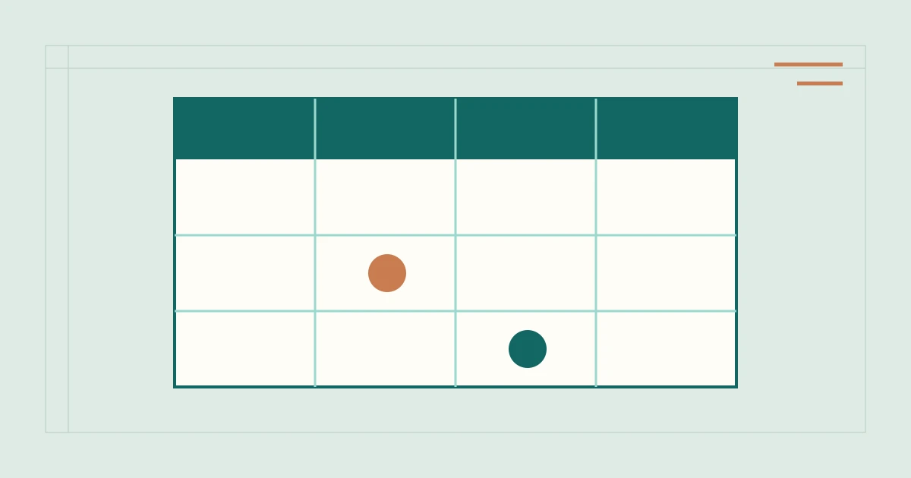

%%P8_EYEBROW%%
%%P8_TITLE%%
%%P8_SUMMARY%%

本页页签
%%P8_H2_1%%
%%P8_TEXT_1%%
| %%P8_COL_1%% | %%P8_COL_2%% | %%P8_COL_3%% | %%P8_COL_4%% |
|---|---|---|---|
| %%P8_ROW_1%% | %%P8_CELL_1_1%% | %%P8_CELL_1_2%% | %%P8_CELL_1_3%% |
| %%P8_ROW_2%% | %%P8_CELL_2_1%% | %%P8_CELL_2_2%% | %%P8_CELL_2_3%% |
| %%P8_ROW_3%% | %%P8_CELL_3_1%% | %%P8_CELL_3_2%% | %%P8_CELL_3_3%% |
%%P8_H2_2%%
%%P8_TEXT_2%%
- %%P8_POINT_1%%
- %%P8_POINT_2%%
- %%P8_POINT_3%%
%%P8_H2_3%%
%%P8_TEXT_3%%
%%P8_CONTEXT_QUOTE%%
%%P8_CONTEXT_CITE%%
%%P8_H2_4%%
%%P8_TEXT_4%%
%%P8_FAQ_LABEL%%
%%P8_FAQ_Q_1%%
%%P8_FAQ_A_1%%
%%P8_FAQ_Q_2%%
%%P8_FAQ_A_2%%
%%P8_FAQ_Q_3%%
%%P8_FAQ_A_3%%
%%P8_SOURCE_LABEL%%
- %%P8_SOURCE_TITLE_1%%
%%P8_SOURCE_NOTE_1%%
- %%P8_SOURCE_TITLE_2%%
%%P8_SOURCE_NOTE_2%%
%%AUTHOR_BIO%%